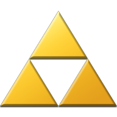

Contents
-
Creation
Games
- Legend of Zelda
- Zelda II: The Adventure of Link
- The Legend of Zelda: A Link to the Past
- The Legend of Zelda: Link's Awakening
- The Legend of Zelda: Ocarina of Time
- The Legend of Zelda: Majora's Mask
- The Legend of Zelda: Oracle of Seasons and Oracle of Ages
- The Legend of Zelda: A Link to the Past and Four Swords
- The Legend of Zelda: The Wind Waker
- The Legend of Zelda: Four Swords Adventures
- The Legend of Zelda: The Minish Cap
- The Legend of Zelda: Twilight Princess
- The Legend of Zelda: Phantom Hourglass
- The Legend of Zelda: Spirit Tracks
- The Legend of Zelda: Skyward Sword
- The Legend of Zelda: A Link Between Worlds
- The Legend of Zelda: Tri Force Heroes
- The Legend of Zelda: Breath of the Wild
- The Legend of Zelda: Tears of the Kingdoms
The Legend of Zelda

Creation
The Legend of Zelda series is one of the most iconic and beloved franchises in gaming history. Created by legendary game designer Shigeru Miyamoto (who also created other iconic Nintendo franchises like Mario and Donkey Kong), the first game was released in 1986 for the Nintendo Entertainment System (NES).
Miyamoto drew inspiration for the series from his childhood experiences exploring the forests, caves and lakes near his home in Japan. He wanted to create a game that captured the sense of adventure and exploration he felt as a child – and The Legend of Zelda was the result!
Everything about Main series Zelda games
The Legend of Zelda is a action/adventure video game franchise, that is famous for it's creative dungeons and puzzels
Games
Legend of Zelda
The Legend of Zelda is the first installment in the Zelda franchise, and its success allowed the development of many sequels in the spawn of over three decades.
Zelda II: The Adventure of Link
about games
The Legend of Zelda: A Link to the Past
about games
The Legend of Zelda: Link's Awakening
about games
The Legend of Zelda: Ocarina of Time
about games
The Legend of Zelda: Majora's Mask
about games
The Legend of Zelda: Oracle of Seasons and Oracle of Ages
about games
The Legend of Zelda: A Link to the Past and Four Swords
about games
The Legend of Zelda: The Wind Waker
about games
The Legend of Zelda: Four Swords Adventures
about games
The Legend of Zelda: The Minish Cap
about games
The Legend of Zelda: Twilight Princess
about games
The Legend of Zelda: Phantom Hourglass
about games
The Legend of Zelda: Spirit Tracks
about games
The Legend of Zelda: Skyward Sword
about games
The Legend of Zelda: A Link Between Worlds
about games
The Legend of Zelda: Tri Force Heroes
about games
The Legend of Zelda: Breath of the Wild
about games
The Legend of Zelda: Tears of the Kingdoms
about games
vel dignissim felis fringilla. Maecenas
condimentum vel est sit amet molestie.
Vestibulum ante ipsum primis in faucibus orci luctus et
ultrices posuere cubilia curae; Duis dapibus turpis
id purus suscipit condimentum. Vivamus bibendum posuere massa.